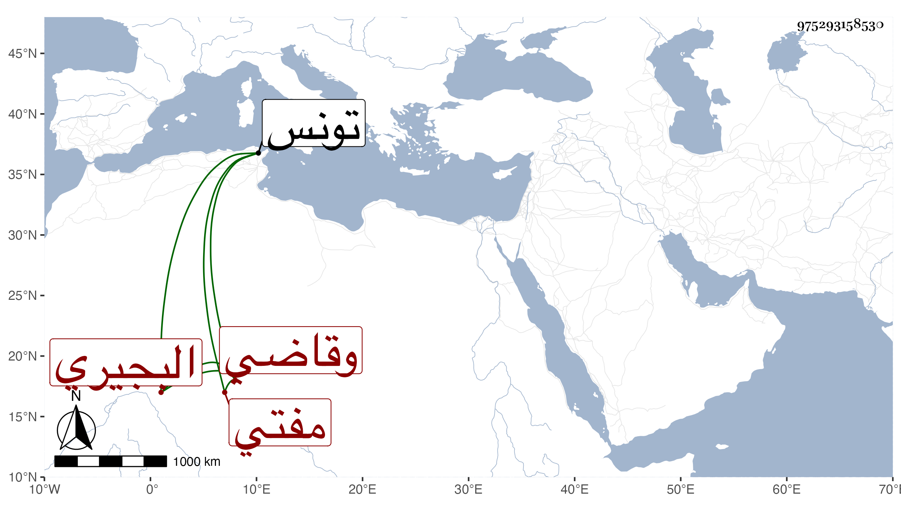

0902Sakhawi.DawLamic.ITO20230111-ara1.EIS1600.975293158530
Biography ID: 975293158530
277
عبد الله البجيري بجيم معقودة مفتي تونس وقاضي الأنكحة بها مات في سنة تسع وخمسين ونسبته بالحرف المولد بين الجيم والشين المشددة . قاله ابن عزم ، قلت وترجمه غيره فقال عبد الله البشيري التونسي المغربي أخذ عن عيسى الغبريني وتقدم في الفقه والعربية وأم بجامع الزيتونة وولي قضاء الأنكحة ودرس وأفتى وأخذ عنه بعض من لقيني ، وهو بموحدة مفتوحة ثم معجمة مشدودة بعدها تحتانية ثم راء قال وما أعلم لماذا .
